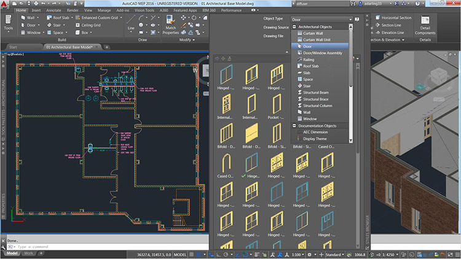
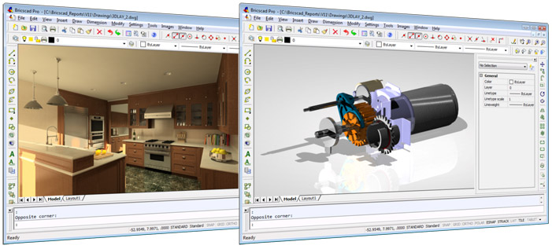

Базовые и легкие САПР
Легкие системы САПР предназначены для 2D-проектирования и черчения, а также для создания отдельных трехмерных моделей без возможности работы со сборочными единицами.
Безусловный лидер среди базовых САПР – AutoCAD.
AutoCAD

AutoCAD — это базовая САПР, разрабатываемая и поставляемая компанией Autodesk. AutoCAD – самая распространенная CAD-система в мире, позволяющая проектировать как в двумерной, так и трехмерной среде. С помощью AutoCAD можно строить 3D-модели, создавать и оформлять чертежи и многое другое. AutoCAD является платформенной САПР, т.е. эта система не имеет четкой ориентации на определенную проектную область, в ней можно выполнять хоть строительные, хоть машиностроительные проекты, работать с изысканиями, электрикой и многим другим.
Система автоматизированного проектирования AutoCAD обладает следующими отличительными особенностями:
- Стандарт “де факто” в мире САПР;
- Широкие возможности настройки и адаптации;
- Средства создания приложений на встроенных языках (AutoLISP и пр.) и с применением API;
- Обилие программ сторонних разработчиков.
Кроме того, Autodesk разрабатывает вертикальные версии AutoCAD - AutoCAD Mechanical, AutoCAD Electrical и другие, которые предназначены для специалистов соответствующей направленности.
Bricscad

В настоящее время на рынке появился целый ряд систем, которые позиционируются, как альтернатива AutoCAD. Среди них можно отдельно отметить Bricscad от компании Bricsys, которая очень активно развивается, поддерживает напрямую формат DWG и имеет целый ряд отличий, включая инструменты прямого вариационного моделирования, поддержку BIM-технологий.